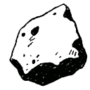

SilexGOSILEX · Juillet 2026
Cinq sujets pour
la suite de Silex
CD, plateforme d’hébergement, qualité des apps SaaS, mémoire & compétences, MCP. Situation → cas → cible. On aligne l’intention — on ne tranche pas tout ici.
Discussion fondateurs · pas une roadmap figée
Mode d’emploi
Un même fil pour chaque sujet
Chaque sujet suit 1 · Aujourd’hui → 2 · Cas → 3 · Cible (parfois sur 2 slides : 1–2 puis 3). Les audits ancrent — le deck porte l’intention.
Aujourd’hui
Comment on fonctionne vraiment. Frictions, risques, coût caché.
Cas concret
Une scène partagée — client, secret, faille, install.
Cible / pistes
Ce qu’on vise, et les chemins possibles (souvent 2 grands choix).
Sujet 01 · CD · 1 · Aujourd’hui
Aujourd’hui : peu ou pas
de déploiement automatisé
La plupart des apps se déploient encore à la main (ou presque). Chaque maison a sa recette. On pousse du code… puis quelqu’un doit « faire arriver » la version en prod.
Sans CD, chaque mise en prod est un mini-projet.
Lent, fragile, difficile à standardiser entre apps clients. La qualité du local n’est jamais rejouée avant d’arriver en prod.
Sujet 01 · CD · 2–3 · Cas & cible
Idéal : la plateforme tire la bonne version
Hotfix client : le code est sur GitHub, la prod non
Un fix Metalyde est mergé. Il reste à « le faire arriver » : SSH, recette maison, checklist mentale. Personne n’a rejoué les tests hors du laptop. Si on oublie une étape, le client voit encore le bug — ou pire, une demi-mise à jour.
Le goulot n’est pas GitHub : c’est l’humain entre le merge et la prod.
Push depuis GitHub
GitHub (ou un humain) pousse vers le serveur. Credentials de deploy souvent côté CI ou machine. Le runtime est « attaqué » à chaque release.
GitHub → serveur
Pull depuis la plateforme
Coolify (si VPS outillage) ou CD natif Railway / Cloudflare / Vercel / Netlify : la plateforme va chercher la version validée.
Plateforme ← registry / git
Coolify en pull
Pour ce qui resterait sur un VPS (outillage / CI — pas la prod multi-clients) : le serveur tire, on ne SSH pas pour chaque release.
CD de la plateforme
Le pull / build / deploy est le métier de Cloudflare, Railway, Vercel… On configure, on ne bricole pas.
Sujet 02 · Plateforme · 1 · Aujourd’hui
Aujourd’hui : trois maisons,
un seul risque
Apps et données éparpillées. Secrets souvent sur le VPS. Backup partiel. Scaler = plus de maintenance, pas plus de sérénité.
Oublier le VPS en prod client.
Apps stateless, data/fichiers chez des pros du backup, secrets dans les coffres plateforme. Deux chemins possibles (slide suivante) — et un boilerplate par chemin.
Sujet 02 · Plateforme · 2–3 · Cas & cible
Deux stacks, deux mondes
Le VPS tombe → apps et clés API d’un coup
Si prod + secrets vivent sur la même machine multi-clients, un incident n’est plus « un service down » : c’est plusieurs clients + l’accès aux outils (messagerie, cloud, factu). D’où : apps stateless, data/fichiers managés, secrets dans le coffre plateforme — et deux chemins pour y aller.
B · Next + services
3 · Cible · repo full-stack · services branchés
Boilerplate Next « classique » — ≠ Workers. Plus de liberté backend · plus de services à orchestrer.
Sujet 03 · Qualité · 1–2 · Aujourd’hui & cas
Audits Spark & Metalyde :
les mêmes familles de problèmes
Deux apps, deux stades de maturité — mais les trous se répètent. C’est ce qu’un standard SaaS doit rendre impossible.
Spark
Fuite sécu : fichiers uploadés publics (sans login) · secret d’auth avec fallback « dev » · cookies non secure.
Tests / CI : zéro test automatisé · aucune CI GitHub Actions.
God files / découpage : 3 composants >1000 L (Pilotage 1679, Tasks 1205, OrgChart 1055) · auth API copiée-collée ~30 routes.
Linter : ESLint basique (1 warning) — pas de Biome, pas de hooks de structure.
→ Données exposables + régression invisible + monolithes intouchables.
Metalyde
Fuite sécu : accès multi-tenant trop ouvert (LEAD/CONSULTANT voient tous les clients) · IDOR images · webhook ACK avant signature · share brief sans ownership · Next non patché (high).
Tests / CI : 98 tests verts mais ~15 % des services couverts · pas d’e2e · pas de coverage gate · CI sur main only (pas staging).
God files / découpage : ~30 fichiers >300 L · couches non enforcées (pages/API → queries, composants → services) · concerns N×M (membership, audit log).
Linter : ESLint + Prettier OK en surface — insuffisant : pas de no-restricted-imports, architecture = convention sociale.
→ Fuite entre clients + cœur métier non testé + structure qui dérive.
spark/artifacts/…/quality-audit · metalyde quality-audit-2026-07-11 (AUDIT-SUMMARY + ARCHITECTURE-STRUCTURE-TESTS)
Sujet 03 · Qualité · 3 · Cible (standard)
Ce qu’on attend d’un SaaS propre
Les audits montrent six manques structurels. Le standard doit les fermer par défaut — via boilerplate + CI, pas par bonne volonté.
1 · Sécurité multi-tenant
ACL testées · pas d’IDOR · secrets fail-fast · uploads protégés. Matrice rôle × ressource en tests.
2 · Coverage utile
Tests unit sur le cœur (auth, access, services critiques) + e2e smoke. Coverage gate progressive — pas 98 tests sur le bord et 0 sur le cœur.
3 · CI avant deploy
Tests, lint, build d’images… sur chaque PR. Catch ce que le local a raté. Bloquant avant merge / pull en prod.
4 · Linter sérieux
Biome (ou équivalent strict) + règles d’architecture (no-restricted-imports, couches). ESLint « 0 error » ne suffit pas si les couches fuient.
5 · Découpage / anti god-files
Petits fichiers · helpers · services fins. Hooks de structure qui refusent les monolithes 1000+ lignes et le copier-coller d’auth.
6 · Boilerplate = stack
Chemin A (Workers) ≠ chemin B (Next + Neon/Supabase/Resend/Upstash). Le starter embarque déjà CI, Biome, tests, couches.
Sans starter forcé, on recrée Spark/Metalyde à chaque client
Le standard se matérialise en boilerplate par chemin (A ou B) + CI avant deploy. Slide suivante = comment on peut l’incarner (illustration). Puis : où tourne la CI (coût).
Corriger les apps existantes et figer le plancher pour les suivantes.
Sujet 03 · Qualité · 3 · Illustration (pas une décision)
Comment le standard devient un starter
Le standard (slide précédente) ne suffit pas tout seul : il faut un repo modèle par chemin plateforme. Voici une piste d’illustration pour le Chemin A — pas un go d’implémentation, pas la seule option.
- Force le vrai usage
- Auth · ACL · fichiers
- Pas un hello-world mort
- CI · Biome · tests · couches
- Sans le métier de l’app
- Barre = audits SaaS
Pourquoi cette forme ?
Un starter sans app meurt. Une app sans kit ne se reproduit pas. Les deux dans le même banc d’essai forcent la qualité.
Chemin B aussi
Même logique si on choisit Next + services : un starter B (Neon/Supabase/Resend/Upstash…), pas le même repo que A.
Sur la table
Valider le principe (starter = produit + kit) · le chemin A ou B · le premier banc d’essai. Détail stack = schéma directeur.
Sujet 03 · Qualité · 3 · Cible (coût CI)
La qualité a un coût de compute
On veut une CI qui rejoue tests, lint, build d’images… pour rattraper ce qu’on a mal fait en local. Repos privés → le compute GitHub Actions est payant. Deux chemins réalistes :
Payer le compute GitHub
Les runners GitHub Actions exécutent la CI dans le cloud. Simple à brancher, zéro machine à gérer — mais la facture monte avec le nombre de repos, de PR et de builds lourds (images Docker…).
€ variables · peu d’ops · coût qui scale avec l’usage
CI sur un VPS (self-hosted)
Un VPS joue toute la partie qualité : tests, lint, build d’images. On paie surtout le serveur — pas les minutes GitHub. GitHub orchestre encore le workflow ; le muscle tourne chez nous.
€ plus prévisible · le VPS sert la qualité, pas la prod client
CI = gourmand en puissance
Builds parallèles, images Docker, suites de tests : ça peut saturer un petit VPS. Il faut dimensionner et limiter (jobs sérialisés, cache, quotas, horaires).
VPS pour la qualité — pas pour héberger les clients
Cohérent avec « oublier le VPS en prod » : le VPS reste utile comme atelier CI (et outillage), pas comme maison multi-clients.
Sujet 04 · Mémoire & compétences · 1 → 2
La mémoire n’est pas
le tiroir des compétences
Deux systèmes collés dans un seul vault Drive. Pas un problème de volume de docs — un problème d’architecture.
Pas d’outils sur Spark / Metalyde
Skills et commands ne vivent que si on est dans le vault. Ailleurs : boîte à outils vide.
Mémoire polluée + MAJ bloquées
Code procédural dans la mémoire. Partager une skill = tirer tout le monolithe. Boucle d’évolution cassée (chemins renommés).
Séparer · niveler · relier
Mémoire en couches L0→L2. Compétences en package portable. Boucles croisées avec revue humaine.
memory design · brain-plugins · local
Sujet 04 · Mémoire & compétences · 3 · Cible
Cible : pyramide mémoire + compétences à part
Le brut reste toujours. On monte en niveau. Les compétences vivent ailleurs — reliées par des boucles, pas collées dans le même tiroir.
Entités
Résumés personne / projet
Synthèse + index vers les souvenirs. « Qui est X ? » / « Où en est Y ? »
Souvenirs
Événements consolidés
Réunion, décision, livrable, incident — le détail utile.
Brut
Sessions & logs (toujours gardés)
Rejouable si l’archi mémoire change demain. Source de vérité.
Compétences
Ce qu’on sait faire — skills, commands, process, MCP. Versionnables et installables hors du vault.
Depuis la mémoire
Patterns répétés dans L1/L2 → proposition de skill.
Vers la mémoire
Exécution → brut L0 → candidats L1 (après revue).
Montée en compétence
Dream propose · humain valide · pas d’auto-install.
Sujet 05 · MCP · 1 → 2
L’interface principale
devient parfois Claude + MCP
UX = surtout nos UI
Les apps ont des écrans. L’agent est un à-côté, pas le produit.
Travailler dans Claude
La personne reste dans l’agent et veut parler à nos outils sans changer d’app.
MCP + plugin
Package installable en un clic (slide suivante).
Utilisateur
dans Claude / agent
MCP Silex
outils & données
Apps métier
clients / ops
UX moderne + pas de factu tokens user.
L’utilisateur apporte son Claude. On expose la capacité, pas le compteur de tokens.
Sujet 05 · MCP · 3 · Cible
Un clic pour installer
tous nos outils
Plugin = MCP + skills + process
MCP : accéder à nos données et actions. Skills : bien formater, bien appeler, bien enchaîner. Process : méthodes qu’on met à disposition. Idéalement un package unique — install en un clic.
Horizon 2 : partenariat Anthropic / écosystèmes type Codex. D’abord : friction d’install minimale.
Faciliter l’install
Packager MCP + skills pour qu’un non-tech branche Silex sans ticket support.
Partenaire plateforme
Être listé / certifié chez Anthropic (et équivalents) — après le package.
Synthèse · ordre de discussion
Cinq sujets, une direction
Ordre de discussion proposé — pas un chemin critique technique, pas une roadmap datée. On peut croiser les sujets ; certains (mémoire, MCP) ne bloquent pas le CD.
01 CD pull
comment on ship
02 Plateforme
A CF · ou B Next+
03 Qualité + CI
standard · compute
04 Mémoire
≠ skills · L0 brut
05 MCP
plugin 1 clic
Prod « tout sur le VPS » + qualité au feeling
SPOF, secrets concentrés, backups maison, apps sans filet de tests ni standard.
Prod managée + SaaS de niveau pro
Stack A ou B, starter solide, CD pull, mémoire propre, UX agent.
Ancrage · preuves terrain
Ce que les audits prouvent déjà
Pas une 2ᵉ liste de sujets — les faits qui rendent la direction urgente.
Peu d’auto
Matrice hétérogène, manuel VPS dominant.
Sans filet natif
Volumes clients sans backup auto. SQLite collée aux apps.
Coffre fragile
Secrets en clair / perso — « VPS perdu = tout perdu ».
Spark · Metalyde
Fuites sécu · coverage · god files · CI/linter insuffisants.
Tiroirs collés
Mémoire + skills ensemble. Pas de couche brut rejouable claire.
Annexe · glossaire
MCP, plugin, skill — trois choses différentes
Standard ouvert · pack d’install · savoir-faire. Ne pas les confondre (sinon on design le mauvais produit).
Prise vers l’extérieur
Model Context Protocol — standard ouvert (pas un produit Anthropic). Un serveur MCP expose outils, données, parfois prompts. Claude s’y branche pour agir hors du chat (Drive, Jira, DB, API…).
Pack d’installation
Unité installable qui regroupe des briques (skills, agents, hooks, MCP…). Un clic / une commande → setup reproductible pour l’équipe. Sur Claude Code : aussi LSP, styles de sortie, etc.
Savoir-faire
Fichier(s) d’instructions / workflows (SKILL.md). Claude les charge à la demande ou via /nom. Peut exister sans plugin (dossier local). Les anciennes « commands » slash y sont fusionnées côté Code.
Hooks
Automatismes sur événements (ex. lint après edit). Déterministes — pas une « suggestion » prompt.
Agents / subagents
Travailleurs isolés (contexte séparé, résumé). En App Claude : surtout dans Cowork.
Commands
Slash /… — côté Code, convergées vers les skills (fichiers commands/ encore supportés).
Connecteur
UX produit (claude.ai / Desktop) pour un MCP souvent distant. Pas le même mot que « plugin Code ».
Extension Desktop
Pack MCP local one-click (.mcpb) dans Claude Desktop. ≠ plugin Claude Code.
Plugin = boîte
Peut inclure : skills · hooks · agents · MCP · (Code) LSP / output-styles. Le MCP seul n’est pas un plugin.
Sources : code.claude.com/docs (features, MCP, plugins) · support.claude.com plugins · modelcontextprotocol.io · fact-check adversarial 2026-07
Annexe · installation
Installer un plugin ou un MCP
Deux surfaces, deux chemins. Ne pas copier-coller la recette Code dans l’app chat (et inversement).
Plugin
Marketplace officielle déjà dispo. Dans une session :
/plugin install nom@claude-plugins-official
Ou shell : claude plugin install nom@…
Autre marketplace : d’abord /plugin marketplace add owner/repo
Puis /reload-plugins si besoin.
MCP seul
claude mcp add --transport http name URL
Ou projet partagé : fichier .mcp.json · user : ~/.claude.json
Statut : /mcp · Un plugin activé peut démarrer ses MCP tout seul.
Skill seule (sans plugin)
Dossier ~/.claude/skills/nom/SKILL.md ou .claude/skills/ du repo.
Plugin
Plans payants (Pro / Max / Team / Enterprise). Menu Customize → Plugins → Browse → Install. Marketplaces Anthropic ou repo GitHub. Upload custom possible (Desktop / Cowork = local machine).
Skills du plugin : / ou « + ». Hooks & sous-agents : surtout Cowork (grisés dans le chat simple).
MCP / connecteurs
Distant : Settings → Connectors / directory (web + Desktop).
Local (Desktop) : Settings → Extensions → browse ou fichier .mcpb one-click. Édition classique claude_desktop_config.json encore possible.
MCP local dans un plugin = machine locale (Desktop / Code), pas le même effet qu’un connecteur cloud sur le web pur.
Skill seule (app)
Customize → Skills · upload ZIP — pas le même chemin filesystem que Claude Code.
code.claude.com/docs/en/mcp · /plugins · support.claude.com « Use plugins in Claude » · Desktop Extensions (Anthropic eng.)
Prochain pas · POC
Banc d’essai : share.gosilex.com
Je vais faire un POC sur silex-share — boilerplate Cloudflare + plugins + MCP — pour remplacer Shlink et l’upload d’artefacts.
Boilerplate Chemin A
Monorepo extractible : Workers · Hono · D1 · R2 · auth dual · UI shadcn · CI. Le kit d’abord — sans métier share collé dedans.
Plugins + MCP
Surfaces agent pour publier et servir : MCP (outils) + plugins (skills / hooks packagés). Publish depuis l’IDE ou l’app, pas seulement une UI web.
Remplace Shlink + upload
Artefacts équipe sur share.gosilex.com/{slug} — shortlinks et fichiers stables, hors Shlink VPS et hors upload ad hoc.
Deux bricolages séparés
Shlink sur le VPS (s.gosilex.com) pour les shortlinks. Upload d’artefacts (HTML, zip, PDF…) sans pipeline d’équipe unifié ni URL produit claire.
VPS · outil isolé · pas de kit
Un host d’artefacts + un starter
Un repo qui prouve le Chemin A en conditions réelles : kit réutilisable GOSILEX et première app métier (share). Shlink best-effort au début, puis bascule vers share.
Kit d’abord · produit ensuite
Repo · silex-share · frame 001-share-platform · goal 001-chemin-a-boilerplate
Ensemble
Construire ensemble la
roadmap et le schéma
directeur technique.
Ce deck aligne l’intention et les sujets ouverts. Il ne fixe pas l’ordre détaillé ni les dates. La suite, c’est de dessiner ensemble le schéma directeur et la roadmap qui en découlent.
← → ou espace · docs/presentations/executive-summary-audits-2026-07.html